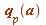
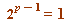
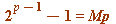
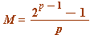
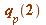
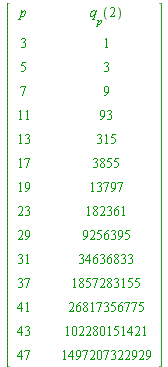
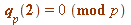
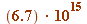
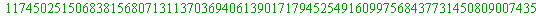

Fermat's 'little' Theorem, and introducing a standard term: the Fermat quotient, 
Fermat's (the discoverer, not the prover) little theorem (mid 1600's). For every prime  and integer `(a, 0)" align="center" border="0"> (mod
and integer `(a, 0)" align="center" border="0"> (mod  ) satisfies
) satisfies
(mod  )
)
(I understand you will have encountered this in your second year course on Number Theory.)
In particular, for every odd prime  we have
we have
 (mod  )
)
A standard term. From the just seen congruence, translating into its equation equivalent, we have:

for some integer  , giving:
, giving:

That integer , is known as the Fermat quotient to the base 2, :
| > | L := []: for p from 3 to 50 do if isprime(p) then
q||p := (2^(p-1) - 1)/p: L := [op(L), p]: fi od: print(``); print(array([['p', ``, ``, 'q[p](2)'], seq([p, ``, ``, q||p], p = L)])): print(``); |
|  | |
| (5.1.1) |
| > |
A very quick note in passing. Primes for which  are called Wieferich primes
(see, e.g., https://en.wikipedia.org/wiki/Wieferich_prime)
They have a connection with the famous 'Fermat's last Theorem' ... .
Only two are known, 1093 and 3511 (the current search limit is  ):
| > | print(``); p := 1093; print(``);(2^(p-1) - 1)/p; print(``); (2^(p-1) - 1)/p mod p; |
| (5.1.2) |
| > |
| > | print(``); p := 3511; print(``);(2^(p-1) - 1)/p; print(``); (2^(p-1) - 1)/p mod p; |
|  |
|
| (5.1.3) |
| > |